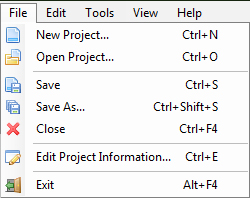

Main Menu File

New Project... (Ctrl + N) creates new template project.
Open Project... (Ctrl + O) opens existing project from your hard drive.
Save (Ctrl + S) saves project that is currently edited.
Save As.. (Ctrl + Shift + S). saves project that is currently edited but you will be asked to enter new file name for your project.
Close (Ctrl + F4) closes the current project but not entire application. But it will ask to save any changes you may enter to the project.
Edit Project Information (Ctrl + E) opens window where you can edit project information like Name, Title, Author, Subject.
Exit (Alt + F4) exits from application, but it will ask you to save any changes you may entered in to the project.